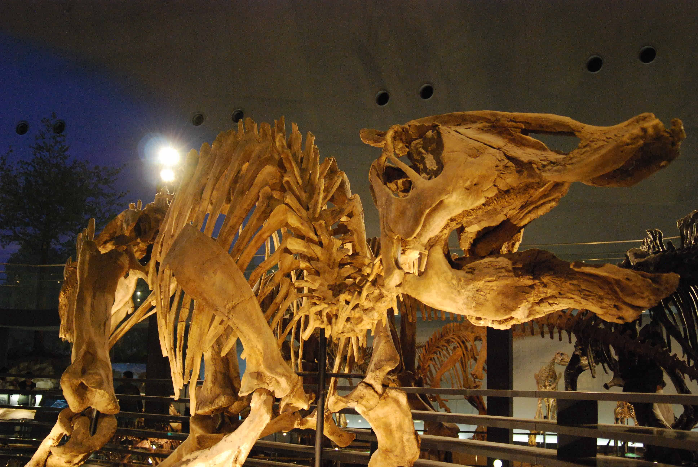

‹my favorite›
猫が好きな気持ちをなんと表現すればいいかわかりませんが、高貴でありながら強く、勝手ながらにプライドの高さを感じるところに魅力を感じています。檻の中にいるのが残念です。
ネコ科でも中形獣が好きですが、動物園で大型獣であるライオンの横顔にほれぼれし撮影しました。
子供のころから宇宙大好きっこで、地元であるつくば市のJAXAやエキスポセンターに足しげく通っていました。まさに宇宙兄弟のムッタのように宇宙服に自分の顔を照らし合わせてドキドキしていました。
 宇宙好きが転じて地球史にも興味を持ち、生命の起源に興味があります。生物の黄金時代であった恐竜の生きていた三つの時代。私がタイムスリップできるのなら、後期白亜紀を堪能してから生態系が壊れていく様を目撃したいです。
猫が好きな気持ちをなんと表現すればいいかわかりませんが、高貴でありながら強く、勝手ながらにプライドの高さを感じるところに魅力を感じています。檻の中にいるのが残念です。
ネコ科でも中形獣が好きですが、動物園で大型獣であるライオンの横顔にほれぼれし撮影しました。